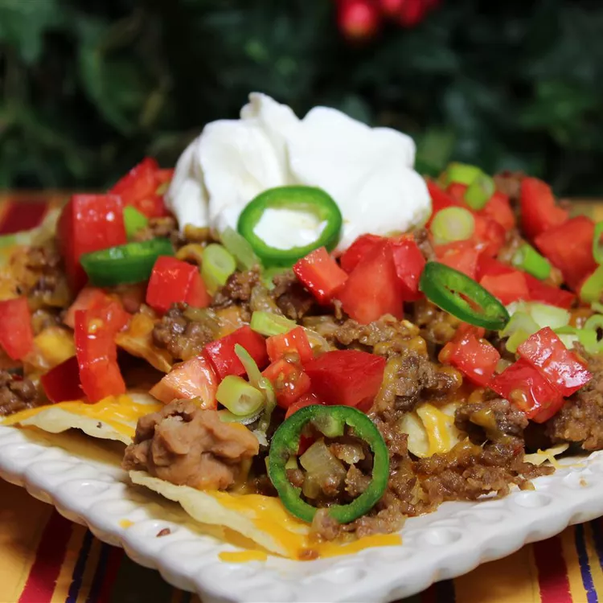

Nachos Recipe
Ingredients
- 1 pound ground meat
- 1 onion, finely diced
- Salt and pepper, to taste
- 1 16oz Can of refried beans
- 1 14.5oz bag of tortilla chips
- 1 or more fresh jalapeno peppers, sliced to top
Directions
- In a large frying pan, brown ground beef with onion, salt and pepper over medium heat. Break the meat into very small pieces while it is cooking. After the meat is thoroughly cooked, drain off the grease.
- Arrange chips on a microwavable platter. Spread beans over the chips. Layer with 1/2 of the cheese, the ground beef mixture, and remaining cheese. Arrange jalapeno peppers on top.
- Microwave on medium-high until cheese has melted. Serve immediately.